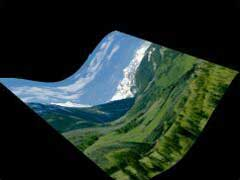

|
第11課 |
|
|  |
飄動的旗幟:
這一課從第六課的代碼開始，創建一個飄動的旗幟。我相信在這課結束的時候，你可以掌握紋理映射和混合操作。 |
|
 |
 |
大家好！對那些想知道我在這裡作了些什麼的朋友，您可以先按文章的末尾所列出的鏈接，下載我那毫無意義的演示（Demo）看看先！我是bosco，我將盡我所能教您來實現一個以正弦波方式運動的圖像。這一課基於NeHe的教程第六課，當然您至少也應該學會了一至六課的知識。您需要下載源碼壓縮包，並將壓縮包內帶的data目錄連其下的位圖一起釋放至您的代碼目錄下。或者使用您自己的位圖，當然它的尺寸必須適合OpenGL紋理的要求。
在我們開始之前，先打開Visual C++（譯者：我可是用的C++ Builder…）並在其他的#inlude之後，添加如下的代碼。這將引入我們在程序中將要用到的複雜（譯者：複雜嗎？）數學函數sine和cosine。
|
|
#include <math.h> // 引入數學函數庫中的Sin
|
我們將使用points數組來存放網格各頂點獨立的x，y，z坐標。這裡網格由45×45點形成，換句話說也就是由44格×44格的小方格子依次組成了。wiggle_count用來指定紋理波浪的運動速度。每3幀一次看起來很不錯，變量hold將存放一個用來對旗形波浪進行光滑的浮點數。這幾行添加在程序頭部，位於最後一行#include之後、GLuint
texture[1]之前的位置。
|
|
float points[ 45 ][ 45 ][3]; // Points網格頂點數組
int wiggle_count = 0; // 指定旗形波浪的運動速度
GLfloat hold; // 臨時變量
|
然後下移至LoadGLTextures()子過程。本課中使用的紋理文件名是Tim.bmp。找到LoadBMP("Data/NeHe.bmp")這一句，並用LoadBMP
("Data/Tim.bmp")替換它。
|
|
if (TextureImage[0]=LoadBMP("Data/Tim.bmp")) // 載入位圖
|
接著在InitGL()函數的尾部return TRUE之前，添加如下的代碼。 |
|
glPolygonMode( GL_BACK, GL_FILL ); // 後表面完全填充
glPolygonMode( GL_FRONT, GL_LINE ); // 前表面使用線條繪製
|
上面的代碼指定使用完全填充模式來填充多邊形區域的背面（譯者：或者叫做後表面吧）。相反，多邊形的正面（譯者：前表面）則使用輪廓線填充了。這些方式完全取決於您的個人喜好。並且與多邊形的方位或者頂點的方向有關。詳情請參考紅寶書（Red
Book）。這裡我順便推銷一本推動我學習OpenGL的好書 — Addison-Wesley出版的《Programmer's Guide to
OpenGL》。個人以為這是學習OpenGL的無價之寶。
接著上面的代碼並在return TRUE這一句之前，添加如下的幾行。
|
|
// 沿X平面循環
for(int x=0; x<45; x++)
{
// 沿Y平面循環
for(int y=0; y<45; y++)
{
// 向表面添加波浪效果
points[x][y][0]=float((x/5.0f)-4.5f);
points[x][y][1]=float((y/5.0f)-4.5f);
points[x][y][2]=float(sin((((x/5.0f)*40.0f)/360.0f)*3.141592654*2.0f));
}
}
|
這裡感謝Graham Gibbons關於使用整數循環變量消除波浪間的脈衝鋸齒的建議。
上面的兩個循環初始化網格上的點。使用整數循環可以消除由於浮點運算取整造成的脈衝鋸齒的出現。我們將x和y變量都除以5，再減去4.5。這樣使得我們的波浪可以「居中」（譯者：這樣計算所得結果將落在區間[-4.5，4.5]之間）。
點[x][y][2]最後的值就是一個sine函數計算的結果。Sin()函數需要一個弧度參變量。將float_x乘以40.0f，得到角度值。然後除以360.0f再乘以PI，乘以2，就轉換為弧度了。
接著我將徹底重寫DrawGLScene函數。
|
|
int DrawGLScene(GLvoid) // 繪製我們的GL場景
{
int x, y; // 循環變量
float float_x, float_y, float_xb, float_yb; // 用來將旗形的波浪分割成很小的四邊形
|
我們使用不同的變量來控制循環。下面的代碼中大多數變量除了用來控制循環和存儲臨時變量之外並沒有什麼別的用處。 |
|
glClear(GL_COLOR_BUFFER_BIT | GL_DEPTH_BUFFER_BIT); // 清除屏幕和深度緩衝
glLoadIdentity(); // 重置當前的模型觀察矩陣
glTranslatef(0.0f,0.0f,-12.0f); // 移入屏幕12個單位
glRotatef(xrot,1.0f,0.0f,0.0f); // 繞 X 軸旋轉
glRotatef(yrot,0.0f,1.0f,0.0f); // 繞 Y 軸旋轉
glRotatef(zrot,0.0f,0.0f,1.0f); // 繞 Z 軸旋轉
glBindTexture(GL_TEXTURE_2D, texture[0]); // 選擇紋理
|
正如您所見，上面的代碼和第六課的很類似，唯一的區別就是我將場景挪的離鏡頭更遠了一些。 |
|
glBegin(GL_QUADS); // 四邊形繪製開始
for( x = 0; x < 44; x++ ) // 沿 X 平面 0-44 循環(45點)
{
for( y = 0; y < 44; y++ ) // 沿 Y 平面 0-44 循環(45點)
{
|
接著開始使用循環進行多邊形繪製。這裡使用整型可以避免我以前所用的int()強制類型轉換。 |
|
float_x = float(x)/44.0f; // 生成X浮點值
float_y = float(y)/44.0f; // 生成Y浮點值
float_xb = float(x+1)/44.0f; // X浮點值+0.0227f
float_yb = float(y+1)/44.0f; // Y浮點值+0.0227f
|
上面我們使用4個變量來存放紋理坐標。每個多邊形（網格之間的四邊形）分別映射了紋理的1/44×1/44部分。循環首先確定左下頂點的值，然後我們據此得到其他三點的值。 |
|
glTexCoord2f( float_x, float_y); // 第一個紋理坐標 (左下角)
glVertex3f( points[x][y][0], points[x][y][1], points[x][y][2] );
glTexCoord2f( float_x, float_yb ); // 第二個紋理坐標 (左上角)
glVertex3f( points[x][y+1][0], points[x][y+1][1], points[x][y+1][2] );
glTexCoord2f( float_xb, float_yb ); // 第三個紋理坐標 (右上角)
glVertex3f( points[x+1][y+1][0], points[x+1][y+1][1], points[x+1][y+1][2] );
glTexCoord2f( float_xb, float_y ); // 第四個紋理坐標 (右下角)
glVertex3f( points[x+1][y][0], points[x+1][y][1], points[x+1][y][2] );
}
}
glEnd(); // 四邊形繪製結束
|
上面幾行使用glTexCoord2f()和glVertex3f()載入數據。提醒一點：四邊形是逆時針繪製的。這就是說，您開始所見到的表面是背面。後表面完全填充了，前表面由線條組成。
如果您按順時針順序繪製的話，您初始時見到的可能是前表面。也就是說您將看到網格型的紋理效果而不是完全填充的。
|
|
if( wiggle_count == 2 ) // 用來降低波浪速度(每隔2幀一次)
{
|
每繪製兩次場景，循環一次sine值，以產生運動效果。 |
|
for( y = 0; y < 45; y++ ) // 沿Y平面循環
{
hold=points[0][y][2]; // 存儲當前左側波浪值
for( x = 0; x < 44; x++) // 沿X平面循環
{
// 當前波浪值等於其右側的波浪值
points[x][y][2] = points[x+1][y][2];
}
points[44][y][2]=hold; // 剛才的值成為最左側的波浪值
}
wiggle_count = 0; // 計數器清零
}
wiggle_count++; // 計數器加一
|
上面所作的事情是先存儲每一行的第一個值，然後將波浪左移一下，是圖像產生波浪。存儲的數值挪到末端以產生一個永無盡頭的波浪紋理效果。然後重置計數器wiggle_count以保持動畫的進行。
上面的代碼由NeHe（2000年2月）修改過，以消除波浪間出現的細小鋸齒。 |
|
xrot+=0.3f; // X 軸旋轉
yrot+=0.2f; // Y 軸旋轉
zrot+=0.4f; // Z 軸旋轉
return TRUE; // 返回
}
|
標準的NeHe旋轉增量。現在編譯並運行程序，您將看到一個漂亮的位圖波浪。除了噓聲一片之外，我不敢確信大家的反應。但我希望大家能從這一課中學到點什麼。如果您有任何問題或者需要澄清的地方，請隨便聯絡我。感謝大家。
 |
版權與使用聲明:
我是個對學習和生活充滿激情的普通男孩,在網絡上我以DancingWind為暱稱，我的聯繫方式是zhouwei02@mails.tsinghua.edu.cn，如果你有任何問題，都可以聯繫我。
引子
網絡是一個共享的資源，但我在自己的學習生涯中浪費大量的時間去搜索可用的資料，在現實生活中花費了大量的金錢和時間在書店中尋找資料，於是我給自己起了個暱稱DancingWind，其意義是想風一樣從各個知識的站點中吸取成長的養料。在飄蕩了多年之後，我決定把自己收集的資料整理為一個統一的資源庫。
版權聲明
所有DancingWind發表的內容，大多都來自共享的資源，所以我沒有資格把它們據為己有，或聲稱自己為這些資源作出了一點貢獻。故任何人都可以複製，修改，重新發表，甚至以自己的名義發表，我都不會追究，但你在做以上事情的時候必須保證內容的完整性，給後來的人一個完整的教程。最後，任何人不能以這些資料的任何部分，謀取任何形式的報酬。
發展計劃
在國外，很多資料都是很多人花費幾年的時間慢慢積累起來的。如果任何人有興趣與別人共享你的知識，我很歡迎你與我聯繫，但你必須同意我上面的聲明。
感謝
感謝我的母親一直以來對我的支持和在生活上的照顧。
感謝我深愛的女友田芹，一直以來默默的在精神上和生活中對我的支持，她甚至把買衣服的錢都用來給我買書了，她真的是我見過的最好的女孩，希望我能帶給她幸福。
資源下載:
文檔 網頁格式
PDF格式
源碼 RAR格式 |
|
|